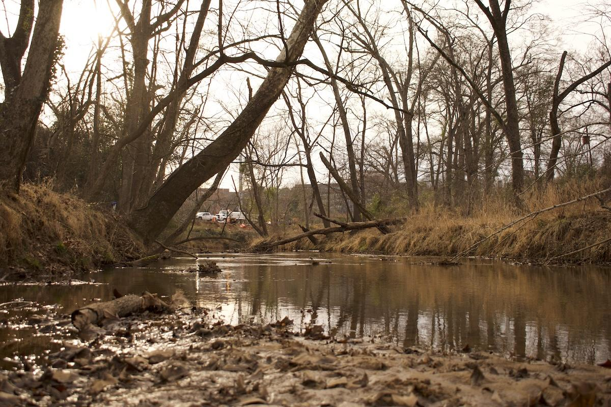
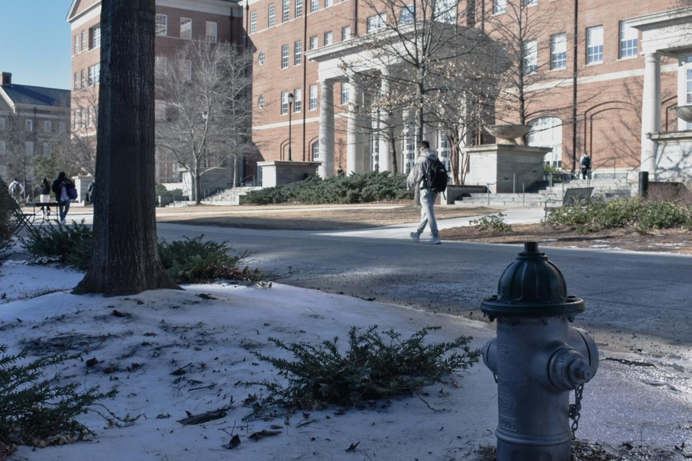
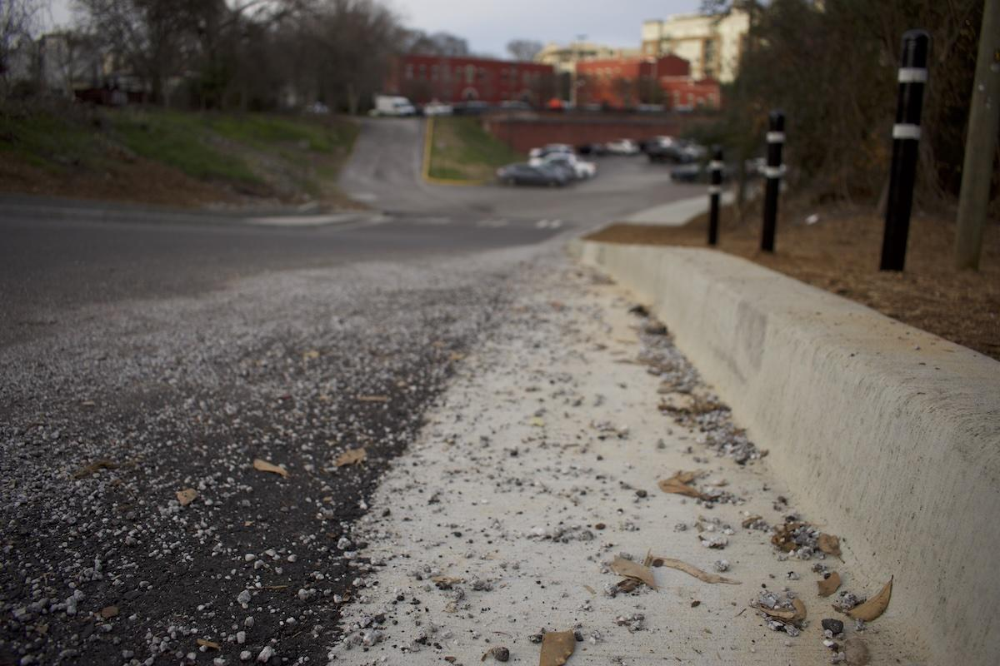

Grady Newsource,
Athens' de-icing chemicals raise waterway concerns
Crews spread 942 tons of sand and 1,400 gallons of brine during January's storm. When it rains, what's left washes toward local streams.

Winter storms bring more to Athens-Clarke County than snow and ice.
After the slush melts, salt crystals and sand linger on streets and sidewalks until the next rainstorm washes those materials toward storm drains, ditches and nearby waterways.
During the two winter storms in Athens during 2026, Athens-Clarke County Emergency Management used a mix of sand and salt-based products to keep roads passable. During the most recent event on Jan. 26, crews applied 1,400 gallons of brine, 942 tons of sand and 7 tons of salt to county roadways.

Workers treated sidewalks and public-access areas with 275 gallons of liquid calcium chloride and 5 tons of granular calcium chloride. Products like these prevent crashes and pedestrian injuries, but runoff can sweep these substances into streams that feed the Oconee River watershed.
A Winning Strategy
Emergency Management Coordinator Meredith Barnum said crews focus first on areas tied directly to public safety and emergency response.
“We prioritize everything around the hospital, everything around our fire stations, our police precincts, and then from there, our major thoroughfares,” Barnum said.
January 2026 saw the addition of brine to the county’s winter toolkit, Barnum said.
“January of 2026 was actually the first time we were able to implement brining,” she said. “Previously we’ve only ever done sand. So, we did sand and brining.”
Barnum added that crews reserve calcium chloride products for sidewalk and pedestrian areas because they are more expensive.
Substances used to treat roads fall into three categories: salts, abrasives and brines. Sodium chloride, commonly known as road salt, disrupts ice formation by lowering the freezing point of water it comes into contact with. Abrasives such as sand and gravel improve traction for vehicles and pedestrians. Brine, a mixture of salt and water, prevents ice from bonding to pavement.
Salt and Freshwater Ecosystems
But these materials do not stay put once a storm has passed. Meltwater can dissolve salts and carry them into waterways and storm drains. Plows and traffic can push material onto shoulders and sidewalks.
“Typically [de-icer] gets into a live river or creek through meltwater or rainwater,” said Gordon Rogers, executive director of Flint Riverkeeper, an organization that monitors water quality. “So, you know, it can build up on tarmac or on pavement, on the shoulder of a road until you get a good rain that washes it.”
Runoff and the dissolved salts it carries can raise salinity in streams and groundwater. For freshwater organisms not adapted to salty conditions, that shift can be damaging.
“You’re not going to be able to add very much salt before you have an effect on a freshwater ecosystem,” Rogers said. “What you would see is acute effects, things being obviously killed, immediately — crawdads, insects, fish — and then lower diversity, lower productivity.”
Abrasives Don’t Disappear
Sand, used far more heavily than salt in the county’s totals, can also cause problems after leaving the roadway. Studies show abrasives can increase water turbidity, clog storm drains and settle into streambeds, limiting the habitat and oxygen available to aquatic organisms. Even when cleanup efforts are undertaken after winter storms, research suggests a substantial share of applied sand remains somewhere in the environment.

Barnum said the county’s Public Works Department tries to collect debris from roadways once the immediate response ends.
“They work on cleaning it all up,” she said. “If that stuff does get pushed to the side of the road as the response goes on, then in the weeks following they’ll do a pick up of everything they can.”
Shifting to Prevention
Barnum said brine allows the county to focus their winter storm response on prevention rather than reaction.
“So brining the roads helps, you know, it raises that temperature, and it helps keep ice from sticking to the roadways, making them a little safer. Whereas sand is kind of [used] on an area that’s already iced over,” Barnum said. “So we used a combo, brining as much as we could before the storm, and then sanding and brining after the storm hit.”
Regardless of when Athens’ next winter storm arrives, county officials and residents will have to strike a balance between public safety and the long-term protection of local waterways.